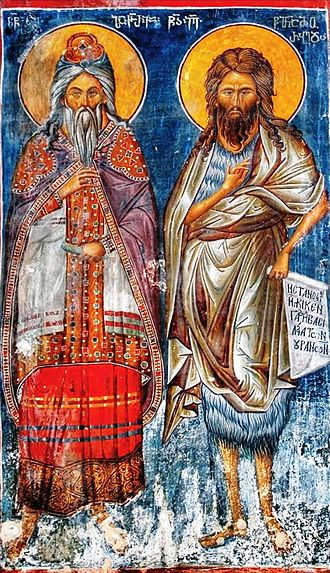
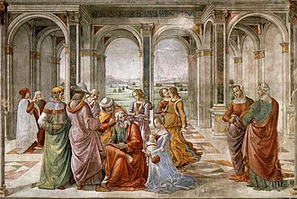
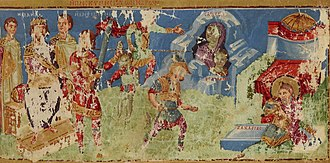

Kehidupan Awal
Santo Zakaria adalah sebuah pendeta dari keturunan kelompok Abia di masyarakat israel dalam Waktu pemerintahan raja herodes dan merupakan suami dari Elisabet dan ayah dari Yohanes. Santo Zakaria adalah orang yang setia dan taat kepada tuhan Bersama dengan istrinya elisabet namun sampai lumayan lanjut di usia mereka hidup tanpa anak sebab elisabet mandul. Kejadian luar biasa terjadi kepadanya sesaat dia sedang melakukan tugas pelayanan di bait suci sebab malaikat Gabriel datang kepadanya dan memberitahukan bahwa atas utusan Allah dia dan Elisabet akan diberi sebuah anak yang akan dikasih nama Yohanes, terkejut dengan pertemuan ini dan memikirkan usianya Santo Zakaria memiliki ragu atas perkataan Gabriel yang di jawab oleh Gabriel bahwa ia akan menjadi bisu sampai lahir putranya atas ketidakpercayaanya atas sesuatu yang sungguh akan terjadi. Sesuai dengan apa yang dikatakan Gabrie, Zakaria tidak dapat berbicara saat keluar dari bait allah dan dalam tidak lama Elisabet dan dia mengandung anak.
Pengbangkitkan Pembicaraan
Setelah cukup Waktu sudah melewat Elisabet melahirkan anaknya dia dan Zakaria yang saat waktu sunatnya 8 hari setelah lahir Elisabet memberi nama Yohanes kepadanya. Zakaria yang saat ini masih bisu menulis kepada sebuah batu "Namanya adalah Yohanes" yang setleah itu memberinya Kembali kemampuan untuk berbicara yang ia gunakan untuk memuji tuhan dengan Lagu Pujiannya (Benedictus).
Akhir Hidup
Sesaat terjadinya pembunuhan seluruh bayi laki laki israel atas perintah raja herodes Zakaria menolak untuk memberitahu keadaan Putranya Yohanes dan sebab itu dibunuh oleh prajurit herodes. Dari cerita Santo Zakaria ada banyak hal yang kita dapat pelajari seperti devosi dan kesetiaannya pada tuhan dari mulai sampai akhir hidupnya, keberaniannya dalam mempertahankan apa yang penting kepadanya dan kemampuannya untuk membimbing dan membentuk orang luar biasa dalam bentuk Yohanes. Dengan membawa Namanya saya berharap untuk lebih merefleksi nilai nilai tersebut.
{kind=link}
{kind=link}